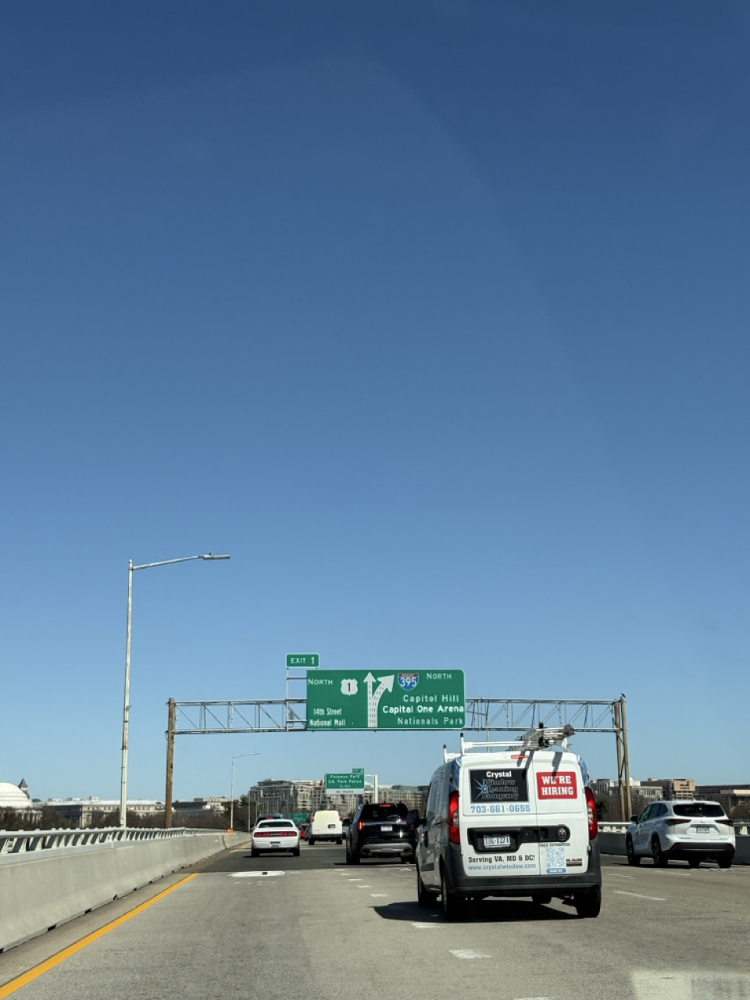
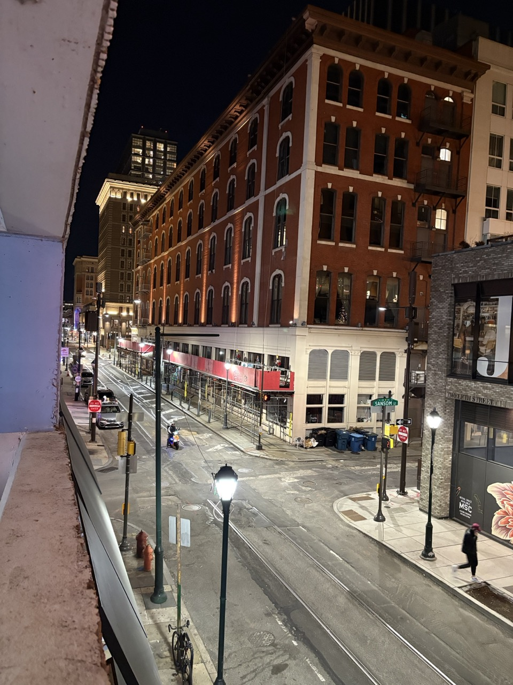
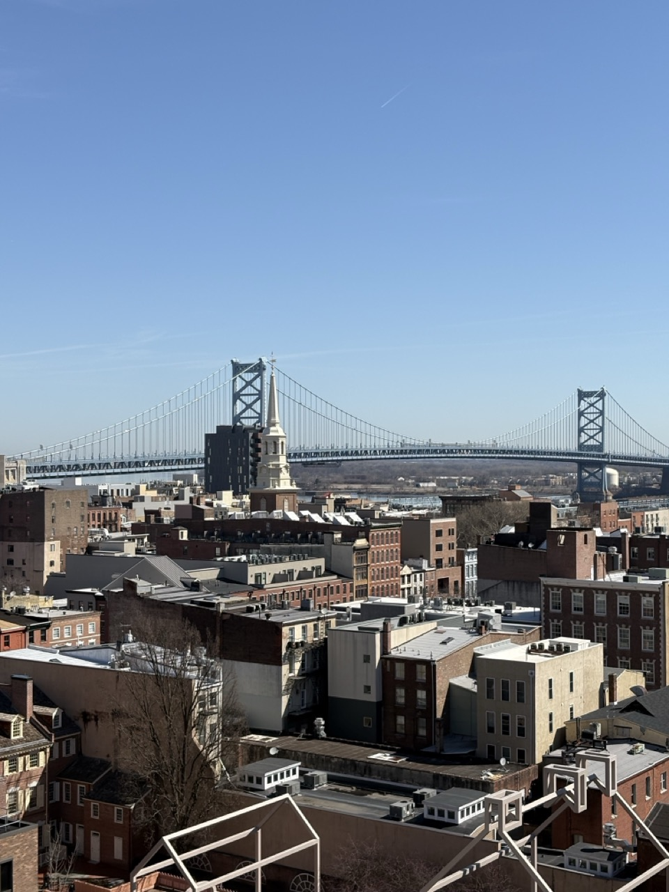
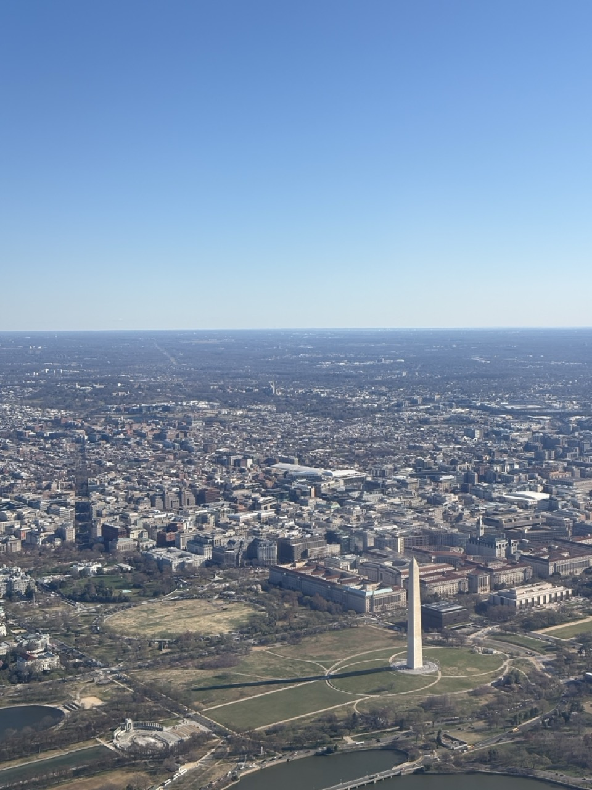
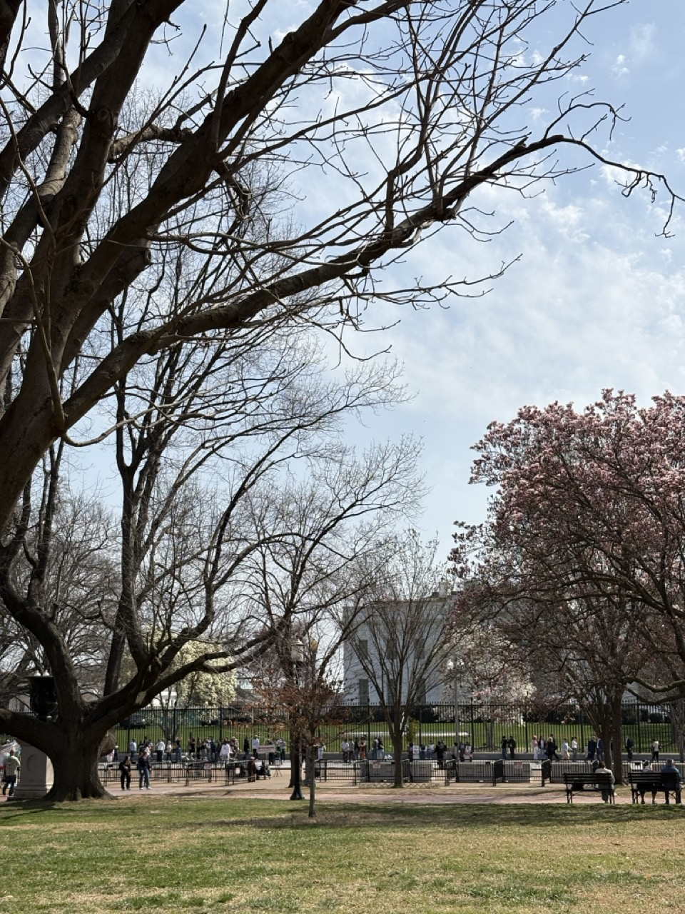

District of Columbia, United States |
I mainly went to Washington, DC and Philadelphia, PA. I also drove across other states and cities, namely Camden, NJ; entire Maryland; Delaware; and the area of Arlington, VA. Here's everything I witnessed and learned.
I heard the streets in Northern states are very tight, which is a shocking thing for people from spacious states in the South like Florida. And it's true. Streets there are crazily tight, especially in Philly. Or because I stayed inside the downtown area, obviously they are small. Most ways there are one way, filled with cars parked side by side and sometimes public bikes. However, the experience was not that bad. People there are used to small roads; they are cool with that. But crossing is a different story. We almost crashed onto a pedestrian because he kept crossing even tho it was green on us. This crossing style is surprisingly common in downtown. Then Arlington, VA. Streets there are confusing. No way you have bridges and freeways intersecting each other. We constantly missed the correct way to turn. DC traffic is better, except the highway connecting Baltimore and Washington, which is always horrible during rush hours. Oh, and New Jersey, Camden specifically. Horrible as supposed. They switch the lane without signaling. They went in front of our car without signaling. Basically New York but in a more hood place. Driving there makes me miss the traffic of Florida more. Well, driving through I-4 during rush hours is not the worst...
One good thing I notice is that there are lots of interstates and freeways around the area we stayed. I-95, I-395, I-495, I-295, I-66, I-76, etc. Quite reasonable for a major area of the country. Lots of expressways too, which is something I am glad Orlando did with its I-4. I went over the crowded highways like a breeze, saved a lot of time.

I-395.
I guess I am a historic architecture lover, because I extremely enjoyed the vibes and architectures in Northern states in general, and in the part we stayed specifically. I love Downtown Philly. It did not feel like the hood at all, it felt like a lively old city in the 1960s. Old houses, people walking in both ways of the sidewalk, roadside stores always welcoming their customers, not so spacious streets, and so on. That's the image of the United States I used to think, and I can tell, it felt like home. It felt like the place I should have been belonged to. Coming to other places, I like houses there. They are still deep inside the forest but are not that old and empty, compared to very rural places like Newberry, SC. Lots of people living in the same house with possibly the same number of cars. About the buildings, the combination of vintage and modern designs lives well there. They connect so well to each other. And obviously in Washington, DC, there are symbolic places with iconic designs. Everything in DC looks massive and bossy, fitting the business and formal vibes. Camden, NJ does not look too bad. It has a long river with clean park areas and luxury apartments in the opposite side. Streets there look old obviously, but honestly it does not feel like the hood at all.



Image 1: A street in downtown Philadelphia. Image 2: Building in Philadelphia. Image 3: Aerial view of Washington.
This would be the part I want to discuss the most. Honestly, I like people in Southern states, but they do not inspire me as deeply as people in Northern states, especially around DC. They seem more formal and more intelligent. Even people doing receptions or just working at the counter do speak and act in a calmer and (somehow) more professional way. I keep thinking that I should be in the North because I want to be with people that are actually talented or at least know how to do things properly. People in the South, they are smart, they are friendly, but those who struggle tend to act and live tough. Some of them straight out only know how to enjoy the life without balancing it and their skills, or they party way too much and talk in a vulgar way. I realize I should be different. Seeing people wear very properly and care about their look, it is time for me to care about my appearance. Hearing some people talk, mostly white people in DC, I realize I should learn how to use the language more academically and professionally, which is essential for my future career. Even when I am texting. While I prefer using slangs, I guess it is better to limit them. I learn how to understand people in a practical and formal way, just like the moment I was in DCA (Reagan National Airport). I should care more about my health. I need to learn how to automate my life better. I need to stay minimal. Sleep earlier. Do not text when you are not ready or you have more things to enjoy in real life..
I stayed a bit long in both sides of the White House, and I realized a lot of things. Obviously, it is impossible to have zero haters in your life, especially as a president. People stay in front of the White House and protest, and everyone inside, the President, his family, his assistants, etc., still continue their things and continue their policies. They do not care, because citizens are not something matters to people from the governments. But at the same time, I had a chance to see opposing opinions from the other party from my eyes without reading the news. News is bullshit and biased. And most people there were friendly and chill when they took a photo of the White House. Possibly because they do not care about politics, or they do and would post that photo as a place to show their disagreement with the current government. Or because they are international travelers.

Outside of the White House.
I used to think DC was just about politics because it has all the most powerful organizations in the country and possibly in the world, and people there were straight out politicians. But I was wrong. Life in DC is chill. This place is not only meant for politicians because there are office workers that still chit chat each other after hours. There are people walking and running across the US Capitol and Tidal Basin without any tensions. There are cherry blossoms that everyone appreciates. There are friendly people from lots of places in the world dedicating their passion to make their life better and make DC a welcomed place.